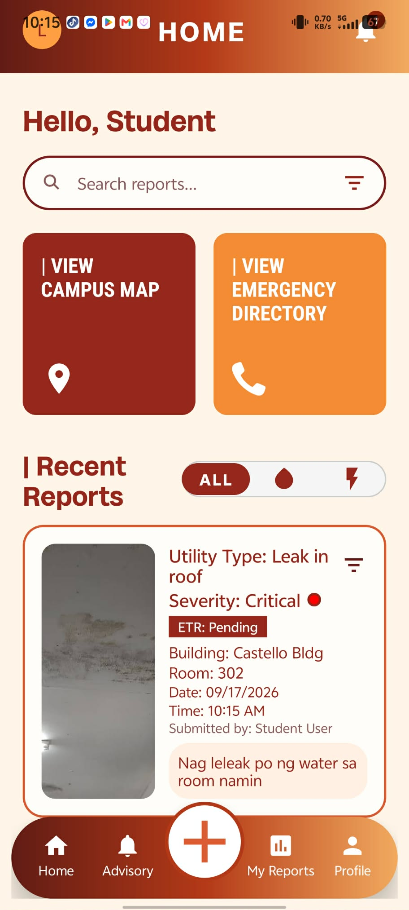
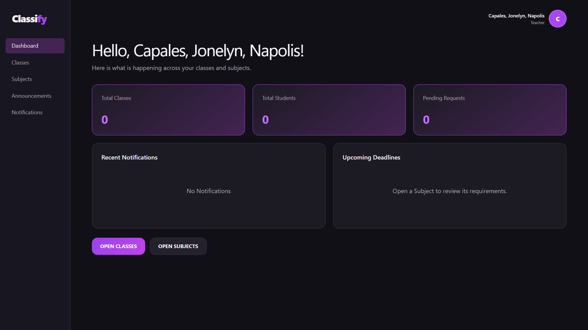
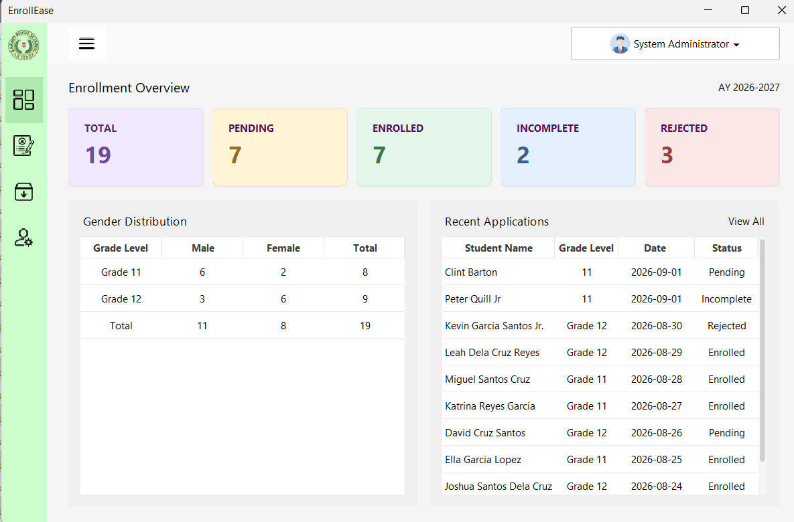
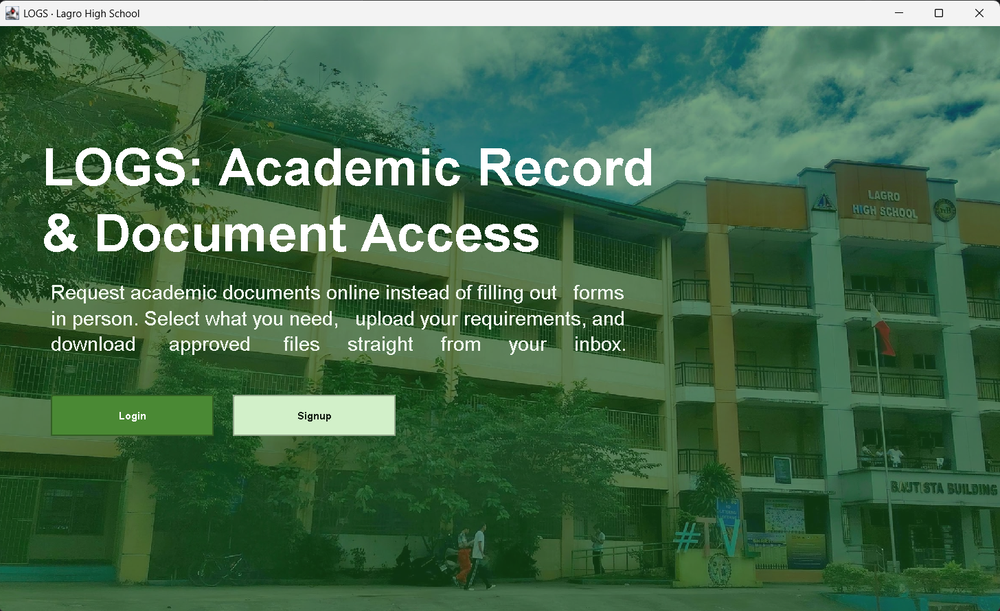
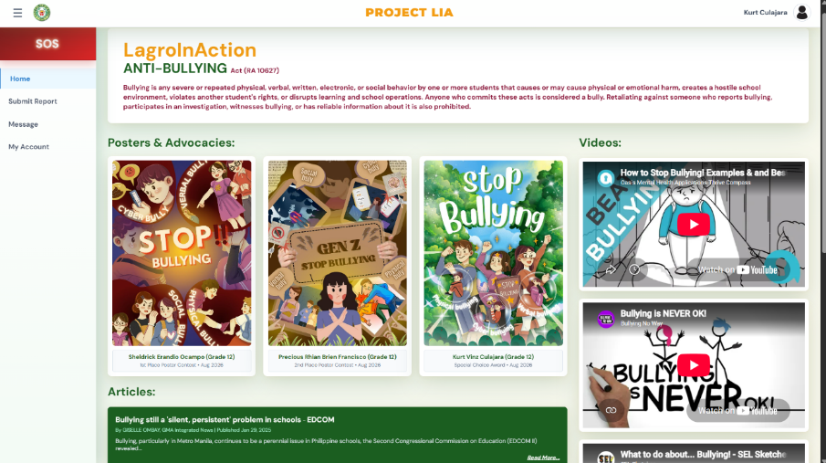

01
UI/UX portfolio
A sample of screens and flows designed by the team.





02
Design samples
Stage 1
Wireframes
Bare-bones, black-and-white layouts that map out where each element sits on a screen — no colors or fonts yet, just structure and flow, so the team can validate usability before investing in visuals.
Stage 2
Prototype
A clickable, high-fidelity mockup that simulates the real app — buttons, transitions, and screens are linked together so the client can click through the experience before a single line of code is written.
Stage 3
Style guide
The system's visual rulebook — defined colors, typography, spacing, and reusable components — so every screen built afterward looks and feels consistent, even across different developers.
03
Tools used
FigmaAdobe XDCanvaIllustratorGoogle FontsCoolors